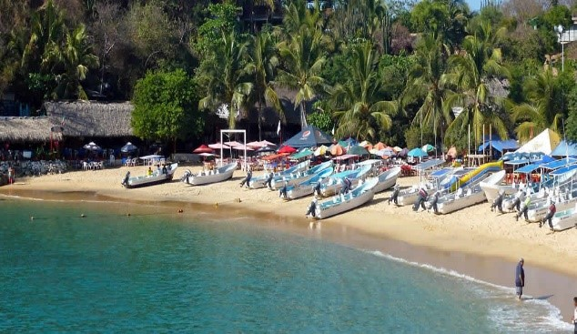

| Playa Angelito
En Playa Angelito tendrás la oportunidad de ver buzos pescando pulpos. Si buscas un destino tranquilo y familiar, Playa Angelito, en Puerto Escondido, México,
cumple con esos atributos, principalmente por sus aguas tranquilas, de olas mansas. Esta playa mexicana es perfecta para nadar y practicar el buceo.
Cuenta con un pequeño puerto, en el que se estacionan las lanchas, y donde puedes caminar y tomar fotos. Además, cuenta con una rica oferta gastronómica,
en la que destaca la Mariscada al Chipotle.
|
 |